Six instructions on the 700 and the 900 and the bold italic, and the adversarial review’s findings, in one round. Top row before, bottom row after. Native pixels, nearest-neighbour. The Regular 400 and the Italic 400 do not move except the M, which you ruled.
| instruction | measured before | after |
|---|---|---|
| bold italic o, thinner to match | thickest 110 against a b d c at 100–104 | 99 |
| M: shards and glitches; the fracture inside the right diagonal | 26 × 2.4 sliver on the cap line; a 4-unit step at C−200 on the diagonal’s inner edge | 0 shards, 0 slivers at 200 / 400 / 700 / 900 |
| a: too thick, lower right of the counter; overlap glitches on the right | counter’s lower-right 60×60 only 52% / 35% white (700 / 900); 2–3 unit steps where the hood leaves the stem | 93% / 98%; steps 0.2 units |
| v w and others too heavy (700 / 900) | v thick 1.12× / 1.23× the stem, w 1.17 / 1.22 | diagonals capped at 0.93 stem above 84: v 1.09 / 1.18, w 1.09 / 1.17 |
| ampersand way too wide | 1,004 / 1,245 units of ink against an H of 758 / 780 | 694 / 736 — skeleton on the 400’s width, strokes lightened, counters convex |
From the review: the bold italic ¢ had lost the daylight beside its bar (round 269’s thicker c); the ° was a solid dot at the 900, the Φ a solid disc, the Ω a closed ring at 700 and 900 in both styles, the roman ¶’s slot an enclosed counter, the ß’s counters dented 21–34 units; the Black declared weight 400. All corrected. The M’s right peak now stands at the left peak’s height.
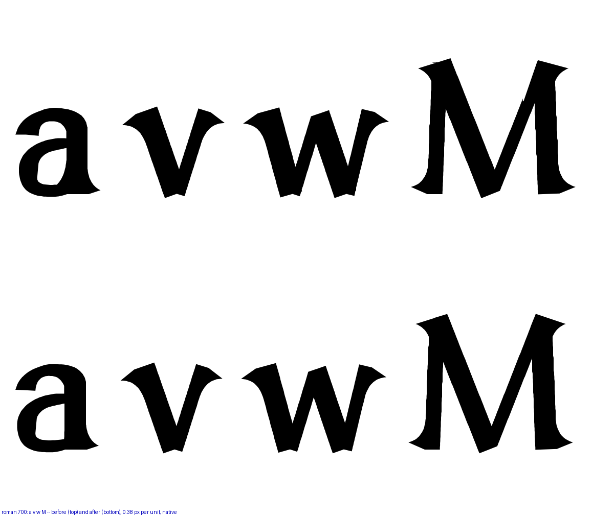
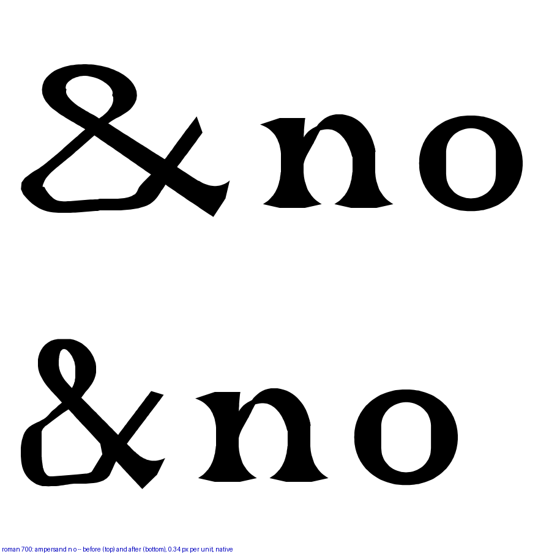
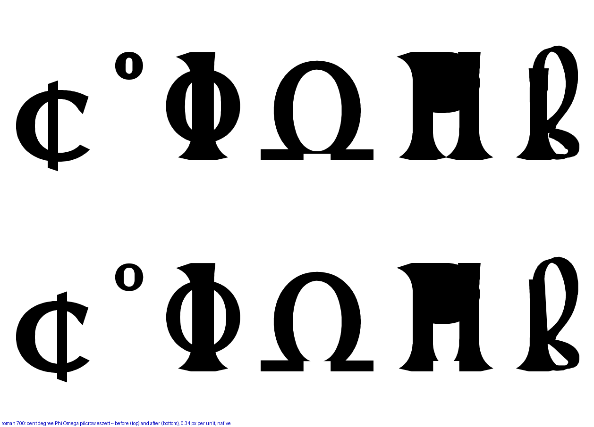
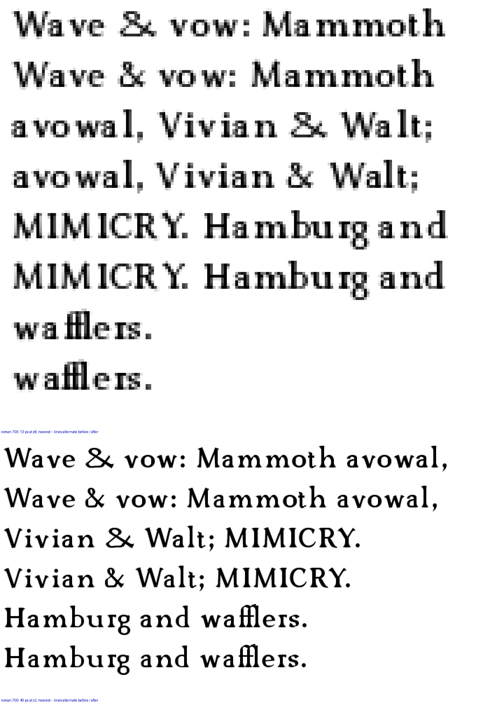
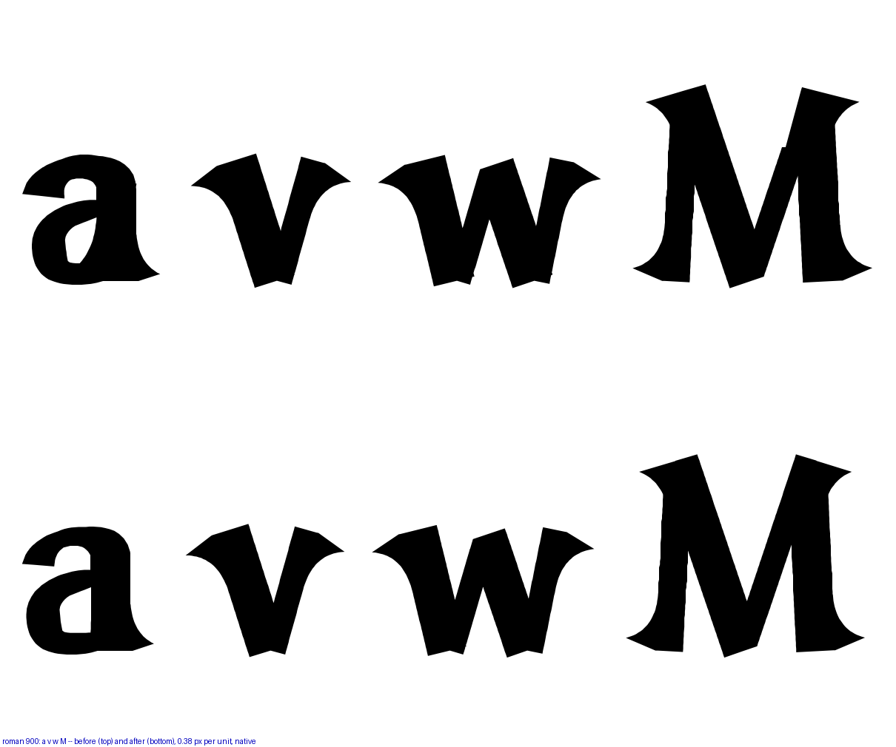
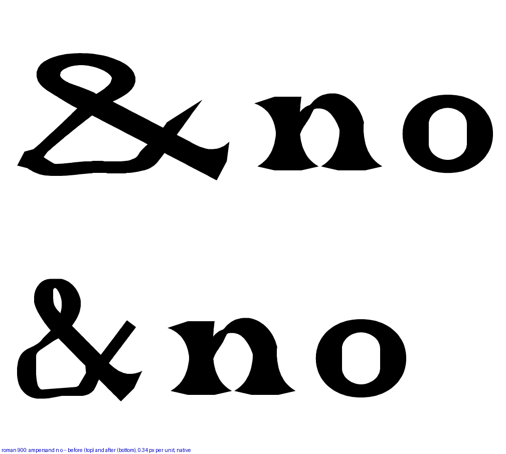
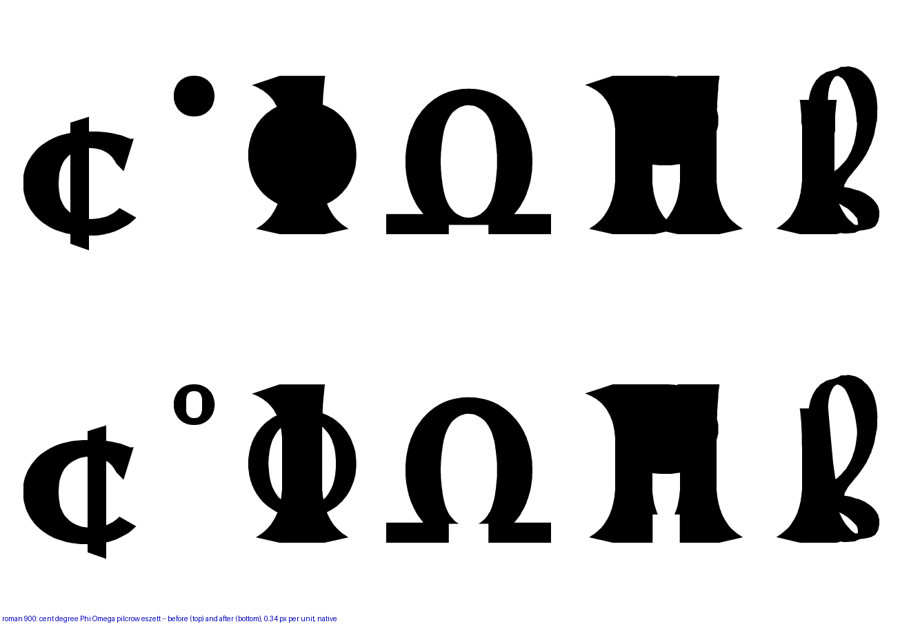
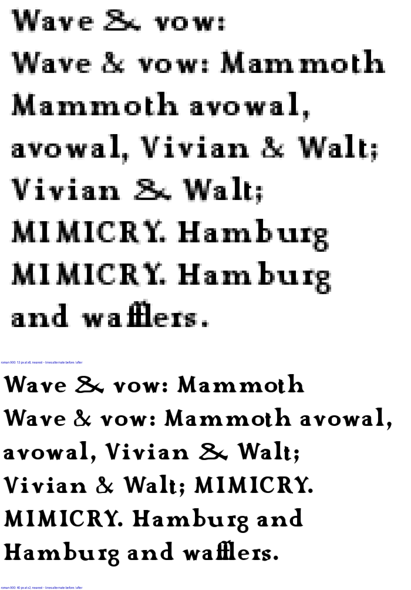
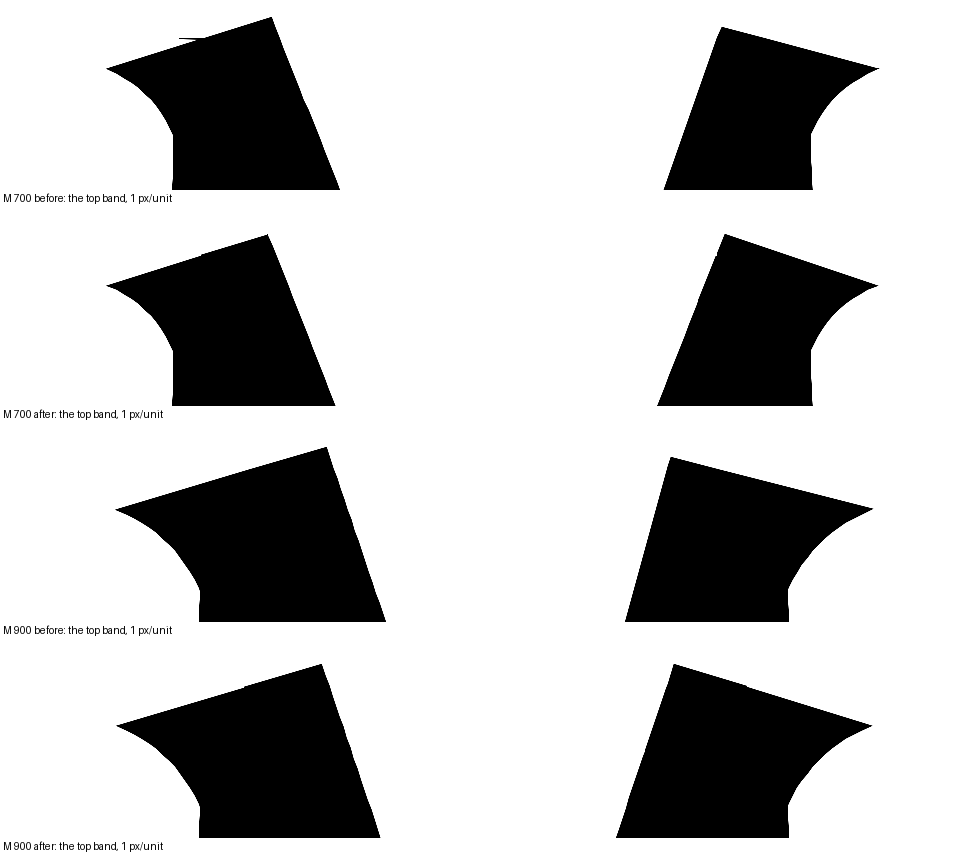
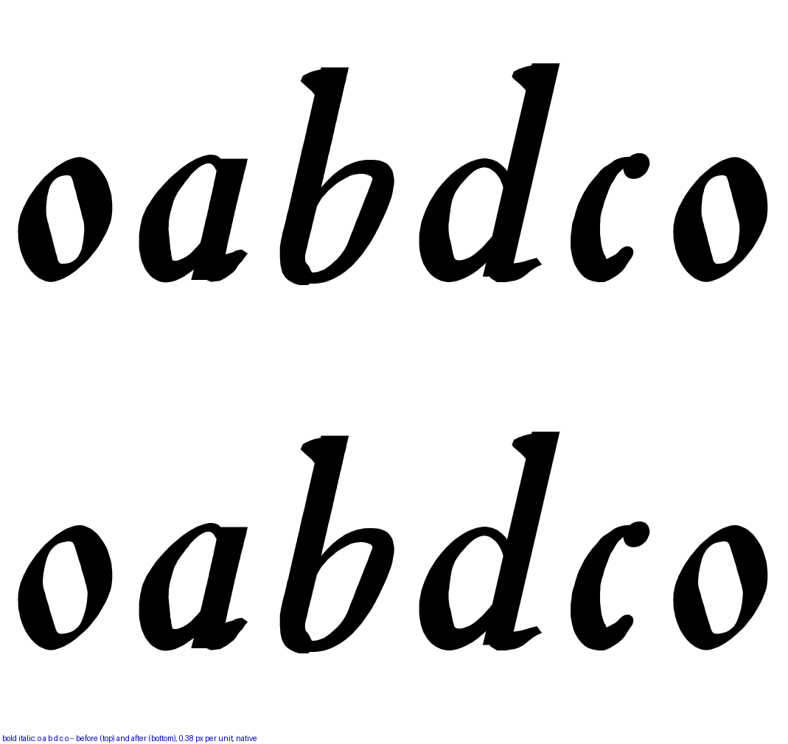
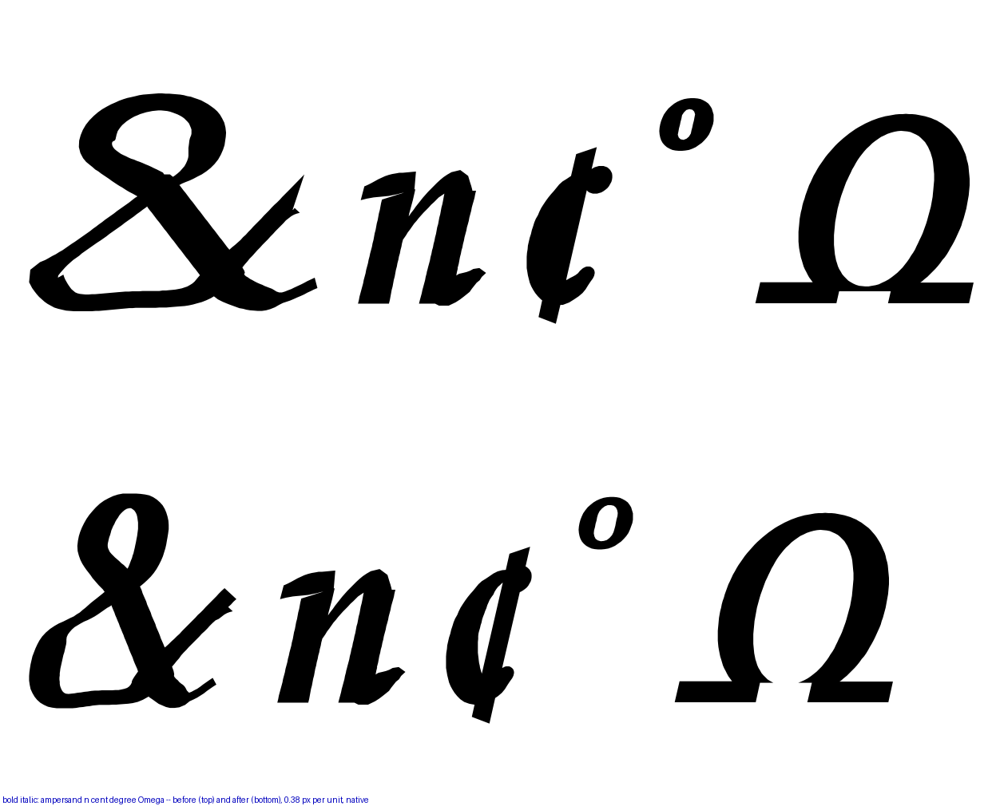
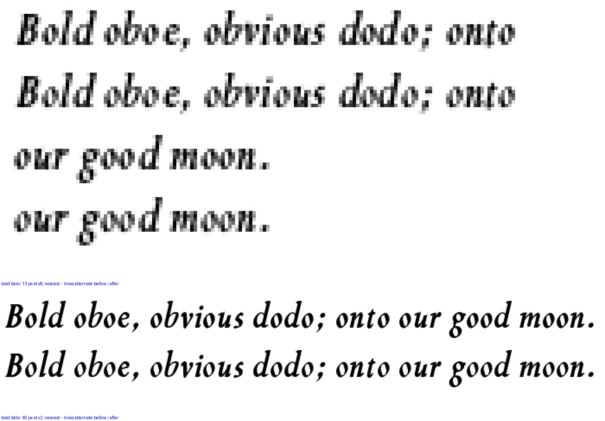